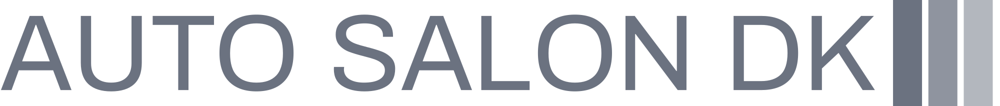

Auto Salon DK bavi se uvozom i prodajom rabljenih vozila iz Njemačke. Sva vozila posjeduju certifikat o proizvođaču i servisnu evidenciju. Pri kupovini vozila u Auto salonu DK dobivate pismeno jamstvo na motor i mjenjač, te doživotno jamstvo na porijeklo vozila i kilometre. Tvrtka je osnovana 2015. godine i pripada grupaciji ASDK koja posluje već 15 godina u Njemačkoj, Bosni i Hercegovini i Crnoj Gori. U ponudi Auto salona DK je oko 100 vozila, a svaki tjedan nam dolazi cca 15 novih vozila. Dolazak vozila možete pratiti na našoj web stranici u dijelu "Vozila u dolasku". Na našoj stranici također možete pogledati sva vozila koja su trenutno u ponudi kao i sve podatke o njima. Ako odlučite osobno doći u naš salon, naše osoblje će Vam pri Vašoj posjeti biti na usluzi, pružiti Vam sve potrebne informacije i tako pomoći pri odabiru Vašeg vozila.
Auto salon DK je salon za prodaju rabljenih automobila koji se nalazi u Zagrebu. Ovaj auto salon nudi širok raspon rabljenih automobila po različitim cijenama, ovisno o potrebama i zahtjevima kupaca. Salon je opremljen modernom tehnologijom, što znači da se kupci mogu osloniti na visokokvalitetnu uslugu i tehničku podršku, kao i na provjerene informacije o povijesti vozila. Auto salon DK nudi svim svojim kupcima mogućnost da temeljito pregledaju vozila prije kupovine, kako bi bili sigurni da su odabrali pravi automobil. Salon ima stručno osoblje koje je uvijek spremno pomoći kupcima pri odabiru automobila. Osoblje se redovito obučava o novim tehnologijama i trendovima na tržištu automobila kako bi bili što bolje informirani i spremni na sve izazove koje tržište može donijeti.
Auto salon DK je ujedno i mjesto gdje se vrši servisiranje i popravak rabljenih automobila. Ovo je izvrsna prilika za kupce koji su kupili vozilo u ovom salonu, jer imaju osiguranu uslugu servisiranja i održavanja vozila po povoljnim cijenama. Osim toga, Auto salon DK ima dobro opremljenu radionicu i stručne tehničare koji su uvijek spremni riješiti bilo kakve probleme na automobilu. Auto salon DK ima i vrlo dobro organiziran webshop na kojem kupci mogu pregledati ponudu automobila, provjeriti dostupnost, zatražiti cijenu i kontaktirati prodavca. Webshop također pruža dodatne informacije o vozilima, kao što su tehničke specifikacije, slike, povijest vozila i druge važne informacije. Kupci koji posjete Auto salon DK mogu biti sigurni da će dobiti vrhunsku uslugu, pouzdanu tehničku podršku i kvalitetne rabljene automobile po pristupačnim cijenama. Ovaj auto salon je jedan od najboljih mjesta za kupnju rabljenih automobila u Zagrebu.